import cantera as ct
import numpy as np
import pandas as pd
import matplotlib.pyplot as plt
def solve_free_flame(phi, T_u=300.0, p=101325.0,
transport="mixture-averaged",
fuel="H2", oxidizer="O2:1, N2:3.76",
mechanism="h2o2.yaml", width=0.03):
"""
Solve a freely propagating premixed flame.
Parameters
----------
phi : float
Equivalence ratio.
T_u : float
Unburned mixture temperature in K.
p : float
Pressure in Pa.
transport : {"mixture-averaged", "unity-Lewis-number"}
Transport model.
fuel : str
Fuel species name.
oxidizer : str
Oxidizer composition string.
mechanism : str
Cantera mechanism file.
width : float
Domain width in m.
Returns
-------
cantera.FreeFlame
Solved flame object.
"""
gas = ct.Solution(mechanism, transport_model=transport)
gas.set_equivalence_ratio(phi, fuel, oxidizer)
gas.TP = T_u, p
flame = ct.FreeFlame(gas, width=width)
flame.set_refine_criteria(ratio=2.0, slope=0.005, curve=0.01)
flame.set_max_grid_points(flame.flame, 10000)
flame.solve(loglevel=0, auto=True)
return flame
phi = 1.0
flame = solve_free_flame(phi)
flame_df = flame.to_pandas()
flame_df.head()
Output
grid velocity T density X_H2 X_H X_O \
0 0.000 2.330984 300.0 0.849472 0.295858 3.064913e-14 5.554197e-15
1 0.006 2.330984 300.0 0.849472 0.295858 3.784875e-18 4.785144e-15
2 0.009 2.330984 300.0 0.849472 0.295858 1.308085e-19 4.429265e-15
3 0.012 2.330984 300.0 0.849472 0.295858 1.002911e-19 4.099854e-15
4 0.015 2.330984 300.0 0.849472 0.295858 9.248441e-20 3.794904e-15
X_O2 X_OH X_H2O X_HO2 X_H2O2 X_AR X_N2
0 0.147929 1.745315e-14 3.747841e-17 0.0 6.186411e-15 0.0 0.556213
1 0.147929 1.555291e-16 1.812253e-14 0.0 6.184487e-15 0.0 0.556213
2 0.147929 8.640028e-18 1.862558e-14 0.0 6.183497e-15 0.0 0.556213
3 0.147929 5.702416e-18 1.895799e-14 0.0 6.182484e-15 0.0 0.556213
4 0.147929 5.239343e-18 1.926344e-14 0.0 6.181450e-15 0.0 0.556213
plt.figure(figsize=(8, 5))
plt.plot(flame_df["grid"], flame_df["T"])
Output
[<matplotlib.lines.Line2D at 0x7f54eef34830>]
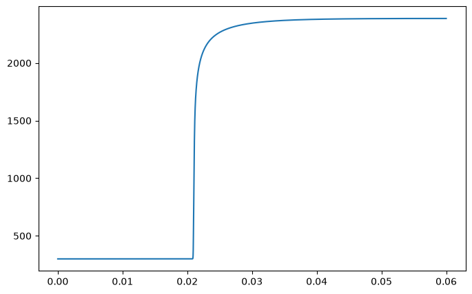
species = ["H2", "H", "O", "O2", "OH", "H2O", "HO2", "H2O2"]
plt.figure(figsize=(8, 5))
for sp in species:
plt.plot(flame_df["grid"] * 1e3, flame_df[f"X_{sp}"], label=sp)
plt.yscale("log")
plt.xlabel("Position $x$ (mm)")
plt.ylabel("Mole fraction $X_i$")
plt.grid()
plt.legend()
plt.tight_layout()
plt.show()
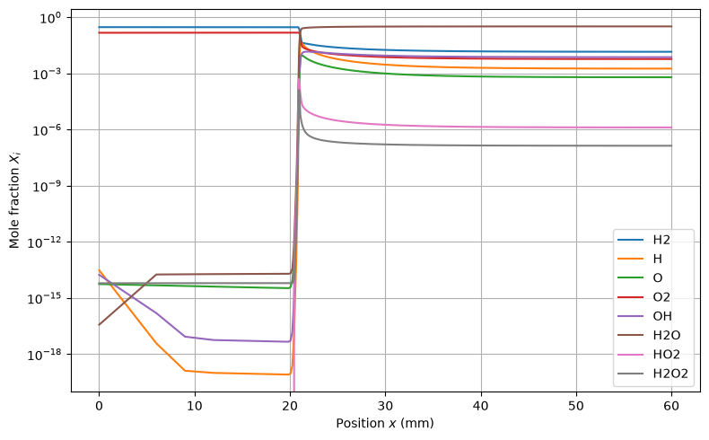
def flame_speed(flame):
"""
Return the laminar flame speed from a solved FreeFlame.
Returns
-------
float
S_L in m/s.
"""
return float(flame.velocity[0])
vel = flame_speed(flame)
print(f"Laminar flame speed = {vel:.2f} m/s")
Output
Laminar flame speed = 2.33 m/s
def flame_thickness(flame):
"""
Return the thermal flame thickness.
Defined as (T_b - T_u) / max(dT/dx).
Returns
-------
float
delta_L in m.
"""
T = flame.T
x = flame.grid
dTdx = np.gradient(T, x)
return float((T[-1] - T[0]) / np.max(dTdx))
flame_d = flame_thickness(flame)
print(f"Thermal flame thickness = {flame_d*1e3:.2f} mm")
Output
Thermal flame thickness = 0.33 mm
step 2 - plot flame structure¶
flame = solve_free_flame(phi=1.0)
gas = flame.gas
x_mm = flame.grid * 1e3 # m → mm
fig, axes = plt.subplots(3, 1, figsize=(7, 8), sharex=True)
# Panel 1: Temperature
axes[0].plot(x_mm, flame.T)
axes[0].set_ylabel("Temperature [K]")
# Panel 2: Species
for sp in ["H2", "O2", "H2O", "OH", "H"]:
axes[1].plot(x_mm, flame.Y[gas.species_index(sp)], label=sp)
axes[1].set_ylabel("Mass fraction [–]")
axes[1].legend(fontsize=8)
# Panel 3: Heat release rate
axes[2].plot(x_mm, flame.heat_release_rate / 1e6)
axes[2].set_ylabel("HRR [MW m$^{-3}$]")
axes[2].set_xlabel("Position [mm]")
fig.tight_layout()
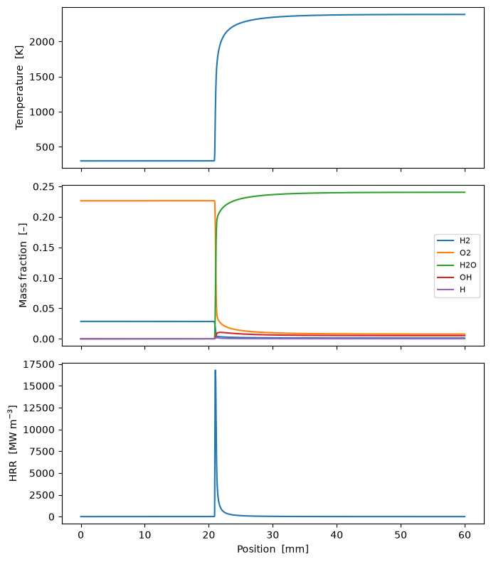
Task 2 - Equilibrium Composition Check¶
# Equilibrium reference
gas_eq = ct.Solution("h2o2.yaml")
gas_eq.set_equivalence_ratio(1.0, "H2", "O2:1, N2:3.76")
gas_eq.TP = 300, ct.one_atm
gas_eq.equilibrate("HP")
# Flame burned-gas state
flame = solve_free_flame(phi=1.0)
T_b = flame.T[-1]
print(f"T_eq = {gas_eq.T:.1f} K")
print(f"T_b = {T_b:.1f} K")
print(f"Error = {abs(T_b - gas_eq.T) / gas_eq.T * 100:.2f} %")
Output
T_eq = 2387.6 K
T_b = 2386.1 K
Error = 0.06 %
# Major species: last flame grid point vs equilibrium
species = ["H2O", "H2", "O2", "OH"]
idx = [gas_eq.species_index(sp) for sp in species]
X_flame = flame.X[idx, -1] # flame.X has shape (n_species, n_points)
X_eq = gas_eq.X[idx]
for sp, xf, xe in zip(species, X_flame, X_eq):
print(f"{sp:4s} flame = {xf:.4e} eq = {xe:.4e} rel. diff = {abs(xf - xe) / xe * 100:.2f} %")
pos, w = np.arange(len(species)), 0.38
plt.figure(figsize=(7, 4.5))
plt.bar(pos - w/2, X_flame, w, label="Flame (burned gas)")
plt.bar(pos + w/2, X_eq, w, label="Equilibrium")
plt.xticks(pos, species)
plt.yscale("log")
plt.ylabel("Mole fraction")
plt.grid(axis="y")
plt.legend()
plt.tight_layout()
plt.show()
Output
H2O flame = 3.2404e-01 eq = 3.2437e-01 rel. diff = 0.10 %
H2 flame = 1.4300e-02 eq = 1.4565e-02 rel. diff = 1.82 %
O2 flame = 5.8410e-03 eq = 5.6094e-03 rel. diff = 4.13 %
OH flame = 7.3552e-03 eq = 7.2848e-03 rel. diff = 0.97 %
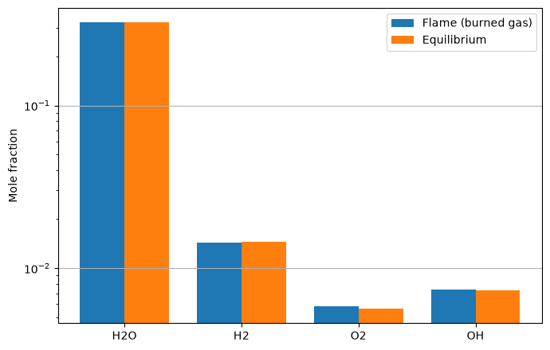
Task 3 - transport Model Comparison¶
flame_ma = solve_free_flame(phi=1.0, transport="mixture-averaged")
flame_le = solve_free_flame(phi=1.0, transport="unity-Lewis-number")
flame_thickness_ma = flame_thickness(flame_ma)
flame_thickness_le = flame_thickness(flame_le)
flame_speed_ma = flame_speed(flame_ma)
flame_speed_le = flame_speed(flame_le)
print(f"MixAvg: S_L = {flame_speed_ma*100:.2f} cm/s, delta_L = {flame_thickness_ma*1e3:.3f} mm")
print(f"Le = 1: S_L = {flame_speed_le*100:.2f} cm/s, delta_L = {flame_thickness_le*1e3:.3f} mm")
Output
MixAvg: S_L = 233.10 cm/s, delta_L = 0.329 mm
Le = 1: S_L = 163.95 cm/s, delta_L = 0.293 mm
plt.figure(figsize=(8, 5))
plt.plot(flame_ma.grid * 1e3, flame_ma.T, label="MixAvg")
plt.plot(flame_le.grid * 1e3, flame_le.T, label="Le = 1")
plt.xlabel("Position $x$ (mm)")
plt.ylabel("Temperature $T$ (K)")
plt.grid()
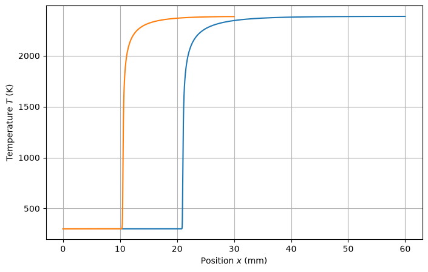
x_ma = flame_ma.grid - flame_ma.grid[np.argmax(np.gradient(flame_ma.T, flame_ma.grid))]
x_le = flame_le.grid - flame_le.grid[np.argmax(np.gradient(flame_le.T, flame_le.grid))]
plt.figure(figsize=(7, 4.5))
plt.plot(x_ma * 1e3, flame_ma.T, label="Mixture-averaged")
plt.plot(x_le * 1e3, flame_le.T, label="Le = 1")
plt.xlim(-1, 1.5)
plt.xlabel("$x - x_f$ (mm)")
plt.ylabel("Temperature (K)")
plt.grid()
plt.legend()
plt.tight_layout()
plt.show()
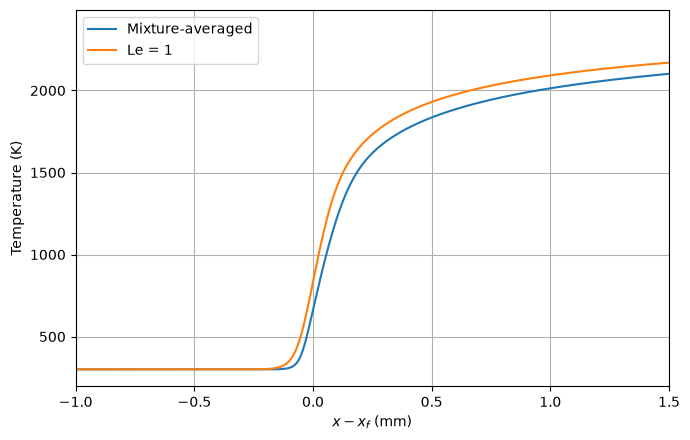
gas_Z = ct.Solution("h2o2.yaml")
gas_Z.set_equivalence_ratio(1.0, "H2", "O2:1, N2:3.76")
Z_st = gas_Z.mixture_fraction("H2", "O2:1, N2:3.76")
def mixture_fraction(flame, fuel="H2", oxidizer="O2:1, N2:3.76"):
Z = np.empty(len(flame.grid))
for i, Y in enumerate(flame.Y.T): # flame.Y has shape (n_species, n_points)
gas_Z.Y = Y
Z[i] = gas_Z.mixture_fraction(fuel, oxidizer)
return Z
Z_ma = mixture_fraction(flame_ma)
Z_le = mixture_fraction(flame_le)
fig, ax = plt.subplots(figsize=(6, 3))
ax.plot(flame_ma.grid * 1e3, Z_ma, label="Mixture-averaged")
ax.plot(flame_le.grid * 1e3, Z_le, label="Unity Lewis")
ax.axhline(Z_st, ls="--", color="gray", lw=0.8, label=f"$Z_{{st}}$ = {Z_st:.3f}")
ax.set_xlabel("Position [mm]")
ax.set_ylabel("Mixture fraction $Z$ [–]")
ax.legend()
fig.tight_layout()
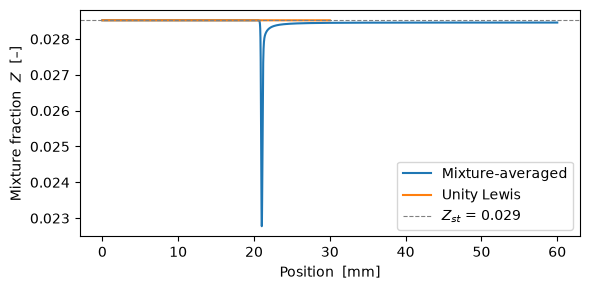
k = flame_ma.gas.species_index("H2")
x = flame_ma.grid * 1e3
# 2. Lewis number of H2 through the flame
alpha = flame_ma.thermal_conductivity / (flame_ma.density * flame_ma.cp_mass)
Le_H2 = alpha / flame_ma.mix_diff_coeffs[k]
plt.figure(figsize=(6, 3))
plt.plot(x, Le_H2, label="$Le_{H_2}$ (mixture-averaged)")
plt.axhline(1, ls="--", color="gray", label="$Le = 1$ (unity-Lewis model)")
plt.xlabel("Position [mm]")
plt.ylabel("Lewis number of H$_2$ [–]")
plt.legend()
plt.tight_layout()
# 3. H2 mass flux: convective vs diffusive
Y = flame_ma.Y[k]
J_conv = flame_ma.density * flame_ma.velocity * Y
J_diff = -flame_ma.density * flame_ma.mix_diff_coeffs[k] * np.gradient(Y, flame_ma.grid)
plt.figure(figsize=(6, 3))
plt.plot(x, J_conv, label=r"convective $\rho u Y_{H_2}$")
plt.plot(x, J_diff, label=r"diffusive $-\rho D\,dY_{H_2}/dx$")
plt.xlabel("Position [mm]")
plt.ylabel("H$_2$ mass flux [kg/(m$^2$ s)]")
plt.legend()
plt.tight_layout()
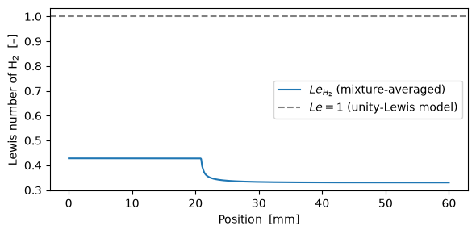
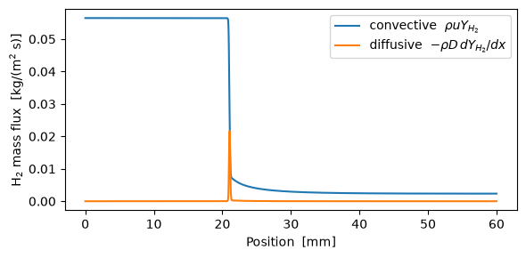
Task 4 - \(S_L(\phi)\) and \(\delta_L(\phi)\) Curves¶
def flame_speed_sweep(phi_range, T_u=300.0, p=101325.0,
transport="mixture-averaged",
fuel="H2", oxidizer="O2:1, N2:3.76",
mechanism="h2o2.yaml"):
"""
Compute S_L over a range of equivalence ratios.
Returns
-------
numpy.ndarray
S_L in m/s, same shape as phi_range.
"""
phi_range = np.asarray(phi_range, dtype=float)
S_L = np.empty_like(phi_range)
for i, phi in np.ndenumerate(phi_range):
flame = solve_free_flame(phi, T_u, p, transport, fuel, oxidizer, mechanism)
S_L[i] = flame_speed(flame)
return S_L
def flame_thickness_sweep(phi_range, T_u=300.0, p=101325.0,
transport="mixture-averaged",
fuel="H2", oxidizer="O2:1, N2:3.76",
mechanism="h2o2.yaml"):
"""
Compute delta_L over a range of equivalence ratios.
Returns
-------
numpy.ndarray
delta_L in m, same shape as phi_range.
"""
phi_range = np.asarray(phi_range, dtype=float)
delta_L = np.empty_like(phi_range)
for i, phi in np.ndenumerate(phi_range):
flame = solve_free_flame(phi, T_u, p, transport, fuel, oxidizer, mechanism)
T = flame.T
x = flame.grid
dTdx = np.gradient(T, x)
delta_L[i] = float((T[-1] - T[0]) / np.max(dTdx))
return delta_L
phi_range = np.linspace(0.4, 2.0, 30)
S_L_ma = flame_speed_sweep(phi_range, transport="mixture-averaged")
S_L_le = flame_speed_sweep(phi_range, transport="unity-Lewis-number")
d_ma = flame_thickness_sweep(phi_range, transport="mixture-averaged")
d_le = flame_thickness_sweep(phi_range, transport="unity-Lewis-number")
fig, (ax1, ax2) = plt.subplots(2, 1, figsize=(6, 6), sharex=True)
ax1.plot(phi_range, S_L_ma * 100, "-", color="C0", label="Mixture-averaged")
ax1.plot(phi_range, S_L_le * 100, "--", color="C1", label="Unity Lewis")
ax1.set_ylabel("$S_L$ [cm/s]")
ax1.legend()
ax1.grid()
ax2.plot(phi_range, d_ma * 1e3, "-", color="C0", label="Mixture-averaged")
ax2.plot(phi_range, d_le * 1e3, "--", color="C1", label="Unity Lewis")
ax2.set_xlabel("Equivalence ratio $\\phi$ [–]")
ax2.set_ylabel("$\\delta_L$ [mm]")
ax2.legend()
ax2.grid()
fig.tight_layout()
plt.show()
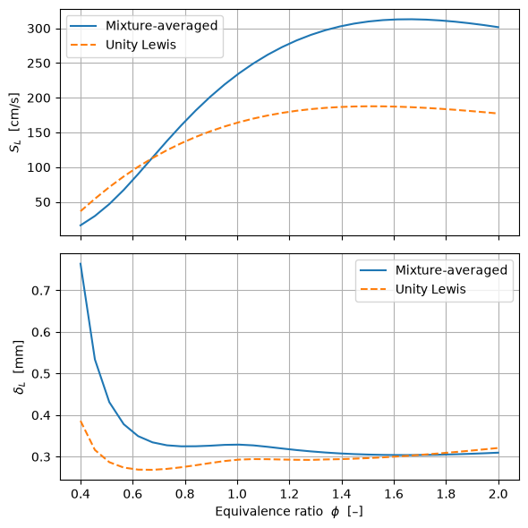
Task 5 - Pressure and Preheat Variations¶
ps = np.linspace(1, 10, 20) # pressure [atm]
phi = 1.0
S_L_ma, S_L_le, d_ma, d_le = (np.empty_like(ps) for _ in range(4))
for i, p in enumerate(ps):
p_pa = p * ct.one_atm
S_L_ma[i] = flame_speed_sweep([phi], transport="mixture-averaged", p=p_pa)[0]
S_L_le[i] = flame_speed_sweep([phi], transport="unity-Lewis-number", p=p_pa)[0]
d_ma[i] = flame_thickness_sweep([phi], transport="mixture-averaged", p=p_pa)[0]
d_le[i] = flame_thickness_sweep([phi], transport="unity-Lewis-number", p=p_pa)[0]
n, ln_C = np.polyfit(np.log(ps), np.log(S_L_ma), 1)
C = np.exp(ln_C)
print(f"S_L = {C:.3f} * p^{n:.3f}")
Output
S_L = 2.599 * p^-0.209
plt.figure(figsize=(8, 5))
plt.plot(ps, S_L_ma * 100, "-", color="C0", label="Mixture-averaged")
plt.plot(ps, S_L_le * 100, "--", color="C1", label="Unity Lewis")
plt.plot(ps, C * ps**n * 100, ":", color="C0", label=f"Fit: $S_L = {C:.2f} p^{{{n:.2f}}}$")
plt.xlabel("Pressure [atm]")
plt.ylabel("Laminar flame speed $S_L$ [cm/s]")
plt.grid()
plt.legend()
Output
<matplotlib.legend.Legend at 0x7f54eefd2a50>
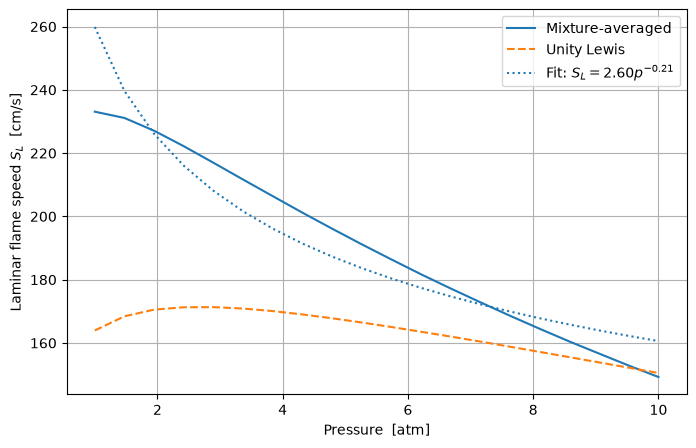
n, ln_C = np.polyfit(np.log(ps), np.log(d_ma), 1)
C = np.exp(ln_C)
print(f"$\\delta$ = {C:.3f} * p^{n:.3f}")
Output
$\delta$ = 0.000 * p^-1.130
plt.figure(figsize=(8, 5))
plt.plot(ps, d_ma * 100, "-", color="C0", label="Mixture-averaged")
plt.plot(ps, d_le * 100, "--", color="C1", label="Unity Lewis")
plt.plot(ps, C * ps**n * 100, ":", color="C0", label=f"Fit: $\\delta = {C:.2f} p^{{{n:.2f}}}$")
plt.xlabel("Pressure [atm]")
plt.ylabel("Laminar flame thickness $\\delta$ [cm]")
plt.grid()
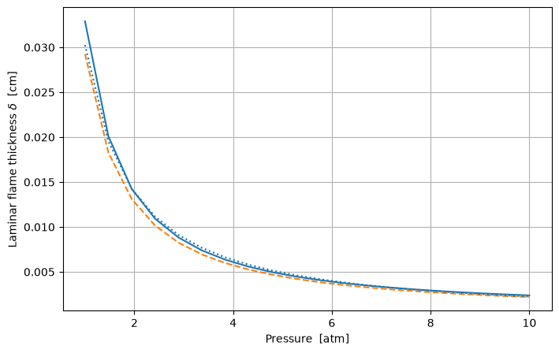
Preheat Temperautre sweep¶
Ts = np.linspace(300, 700, 20) # pressure [atm]
phi = 1.0
S_L_ma, S_L_le, d_ma, d_le = (np.empty_like(Ts) for _ in range(4))
for i, T in enumerate(Ts):
S_L_ma[i] = flame_speed_sweep([phi], transport="mixture-averaged", T_u=T)[0]
S_L_le[i] = flame_speed_sweep([phi], transport="unity-Lewis-number", T_u=T)[0]
d_ma[i] = flame_thickness_sweep([phi], transport="mixture-averaged", T_u=T)[0]
d_le[i] = flame_thickness_sweep([phi], transport="unity-Lewis-number", T_u=T)[0]
n, ln_C = np.polyfit(np.log(Ts), np.log(S_L_ma), 1)
C = np.exp(ln_C)
print(f"S_L = {C:.3f} * T^{n:.3f}")
Output
S_L = 0.000 * T^1.687
plt.figure(figsize=(8, 5))
plt.plot(Ts, S_L_ma * 100, "-", color="C0", label="Mixture-averaged")
plt.plot(Ts, S_L_le * 100, "--", color="C1", label="Unity Lewis")
plt.plot(Ts, C * Ts**n * 100, ":", color="C0", label=f"Fit: $S_L = {C:.2f} T^{{{n:.2f}}}$")
plt.xlabel("Temperature [K]")
plt.ylabel("Laminar flame speed $S_L$ [cm/s]")
plt.grid()
plt.legend()
Output
<matplotlib.legend.Legend at 0x7f54eedcd6a0>
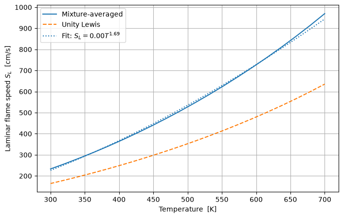
n, ln_C = np.polyfit(np.log(Ts), np.log(d_ma), 1)
C = np.exp(ln_C)
print(f"\\delta = {C:.3f} * T^{n:.3f}")
Output
\delta = 0.000 * T^0.430
plt.figure(figsize=(8, 5))
plt.plot(Ts, d_ma * 100, "-", color="C0", label="Mixture-averaged")
plt.plot(Ts, d_le * 100, "--", color="C1", label="Unity Lewis")
plt.plot(Ts, C * Ts**n * 100, ":", color="C0", label=f"Fit: $\\delta = {C:.2f} T^{{{n:.2f}}}$")
plt.xlabel("Temperature [K]")
plt.ylabel("Laminar flame thickness $\\delta$ [cm]")
plt.grid()
plt.legend()
Output
<matplotlib.legend.Legend at 0x7f54f74fb8c0>
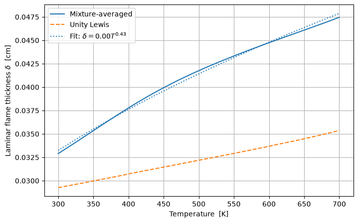